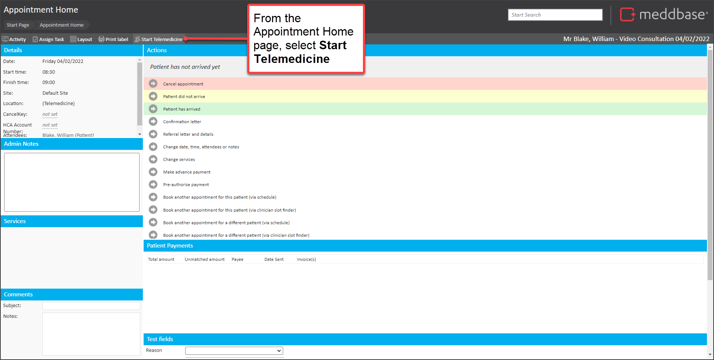
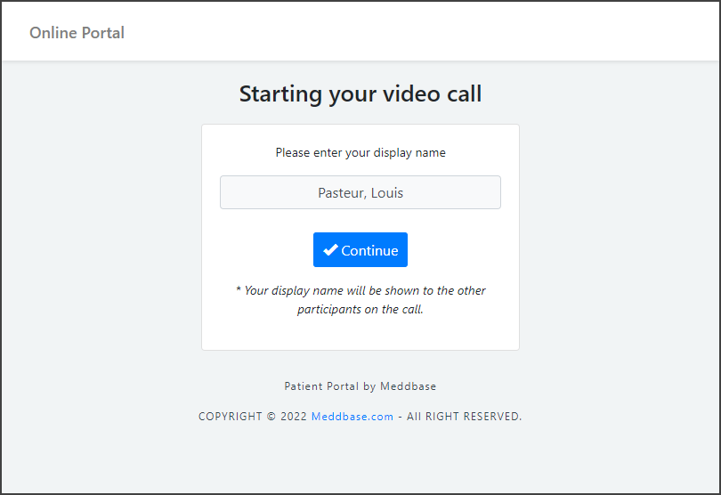
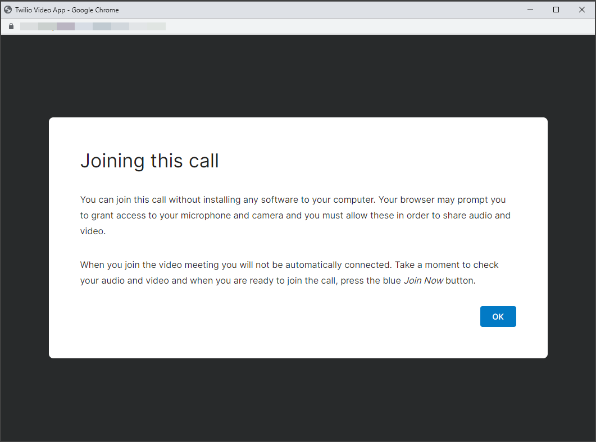
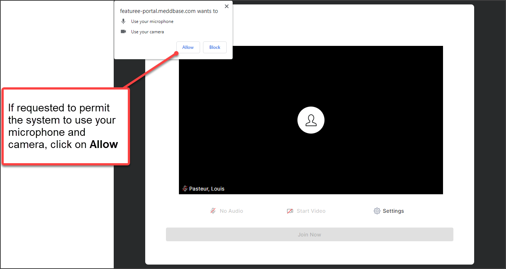
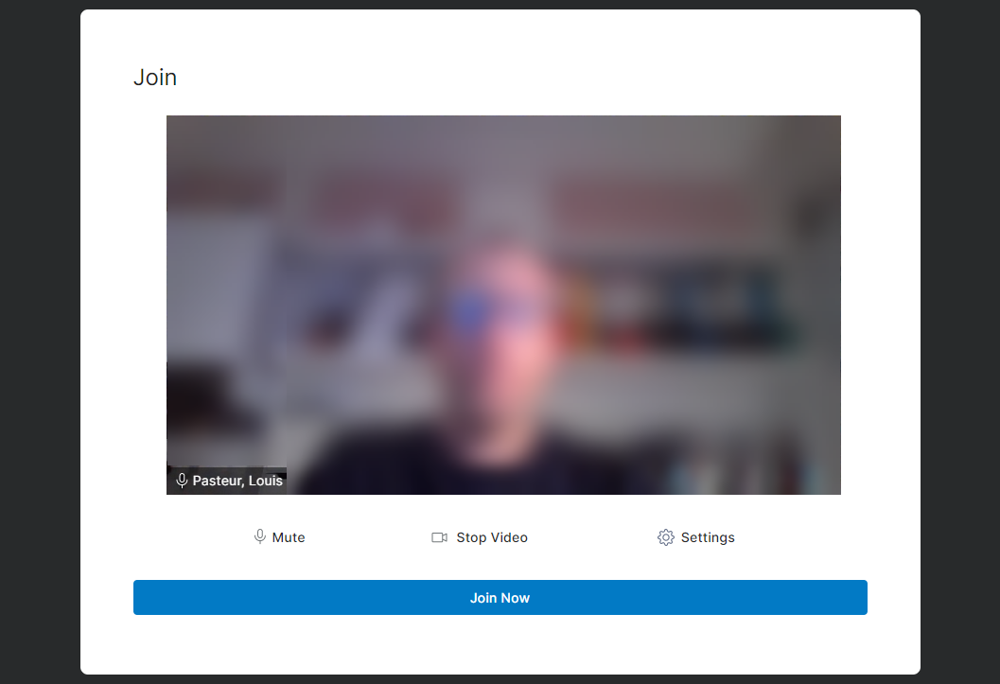
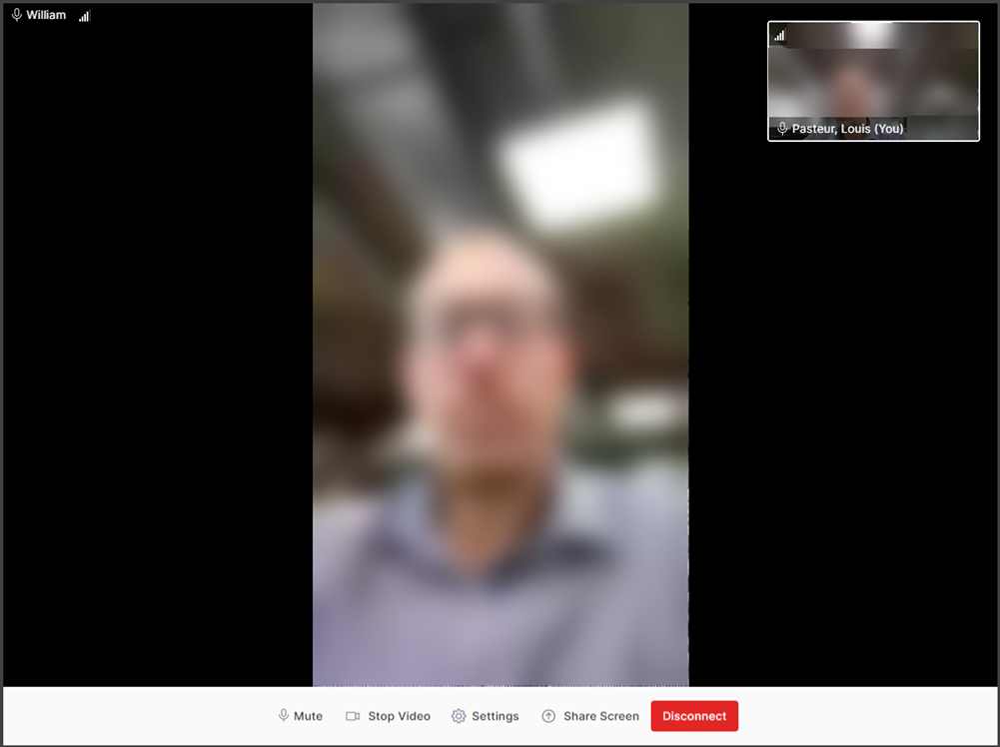
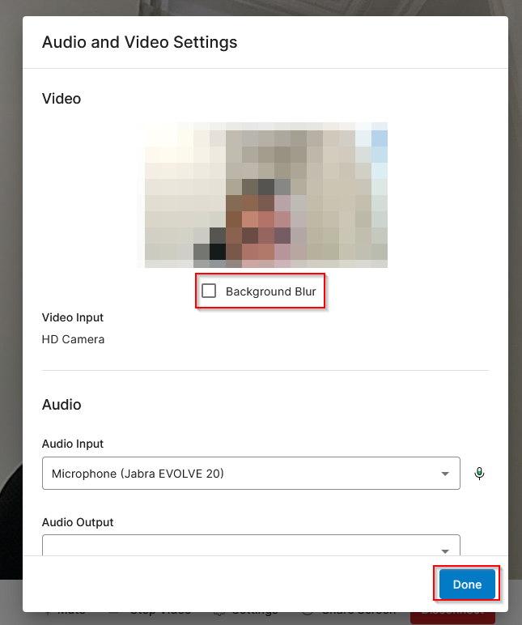

Meddbase integrates with Twilio video to deliver a simple and smooth Telemedicine appointment experience for all participants, both clinicians and patients.
This article outlines:
To enable you to join a Telemedicine appointment, there are things that need to be done beforehand.
There is pre-requisite configuration that needs to be done by your system administrators, and appointment bookings that need to be created by your bookings administrators.
These are outlined in the related article How to set-up and book Telemedicine Appointments (Twilio).
You can conduct a telemedicine video consultation from a computer, tablet or smartphone. Please refer to our latest system requirements for further details.
If you are the clinician who is an appointment attendee, you can do as follows:





You are now part of the telemedicine appointment.
When the patient joins the telemedicine appointment, they will appear in the main part of the screen, with a small panel in the top-right indicating how you appear on screen to them.

The above example gives you a sense of how a connection might appear. In this example, the patient has connected from a mobile device which defines the dimensions of their video within the browser.
Also, we have deliberately blurred pictures of attendees in all screenshots.
| When you want to leave the telemedicine call, simply select Disconnect from within the browser window. |
Within the telemedicine appointment, there is a range of features available to help you manage the call. These are explained below.
| You can select the Mute button at the bottom of the screen to mute your microphone. |
| Having muted, you can then select the Unmute button to re-activate your microphone for this call. |
| You can select the Stop Video button at the bottom of the screen to switch off your video. | |
 | Having switched off your video, you can then select the Start Video button to re-activate your video for this telemedicine call. |
 | You can select the Share Screen at the bottom of the screen to share either an Entire screen, Window or browser tab. |
| Having made a sharing selection, you can then use the Stop Sharing option to stop sharing your screen. |
By selecting Settings you can access Audio and Video Settings. |
From here, you can make selections of Video Input, Audio Input and Audio Output for your Video, Microphone and Speakers. You can also blur the background of your video by selecting the Background Blur checkbox

Then select Done when complete.
Your network administrator will need to permit the download of files with a '.tflite' file extension on the network. The reason being that a TensorFlow 'tflite' file needs to be retrieved from our server by the application when using Telemedicine technology to enable blurring to work as expected.